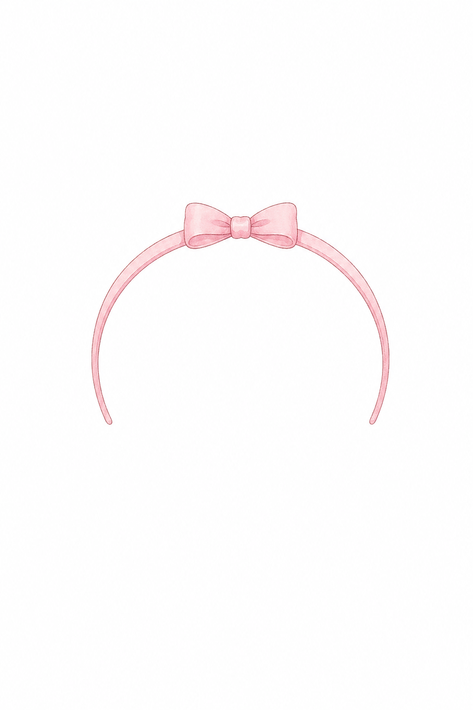
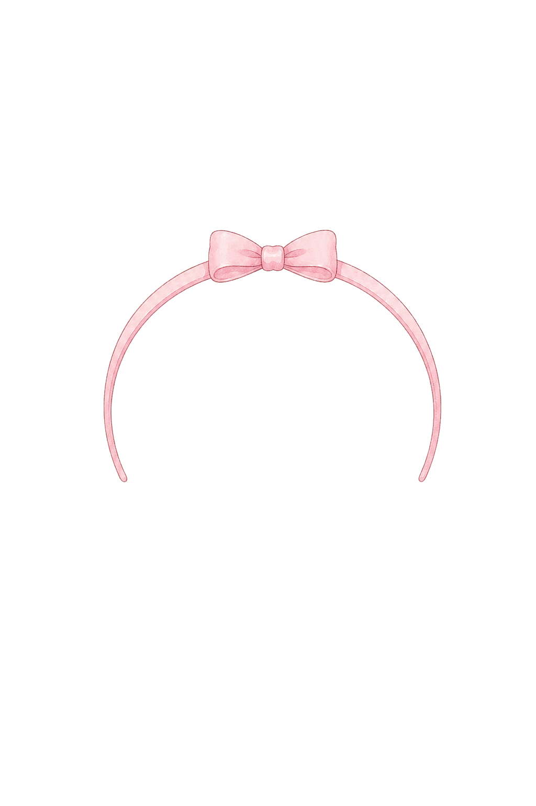
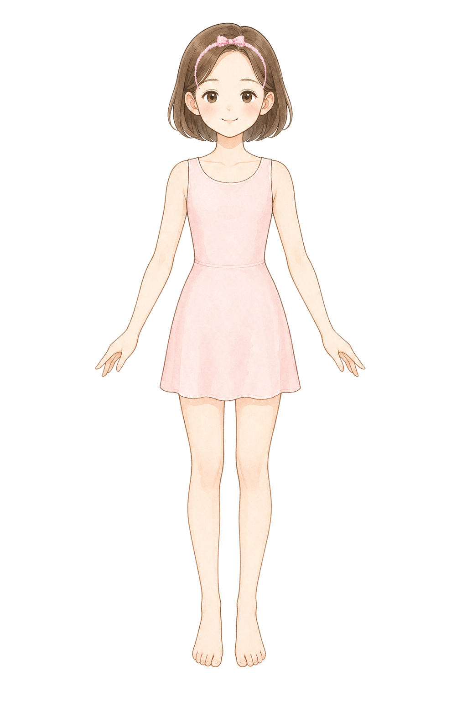
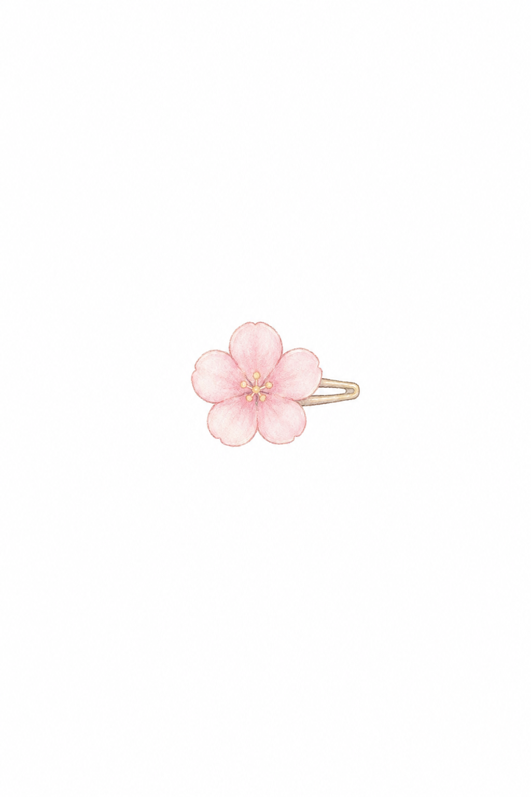
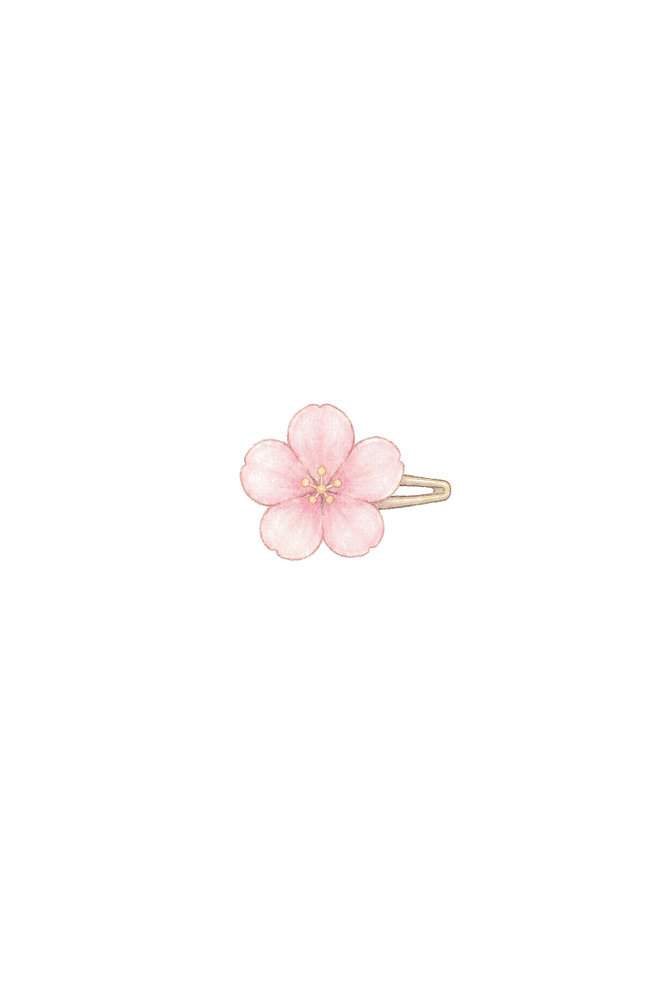
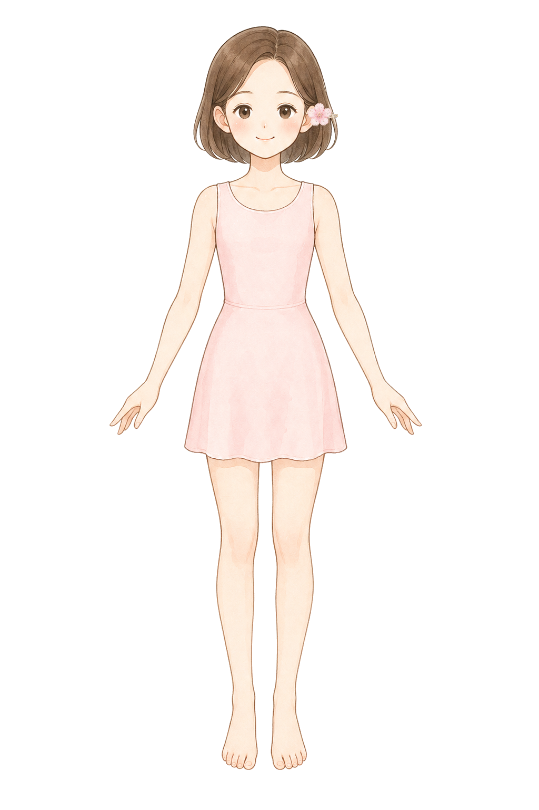

Base: style-d-encyclopedia-clean-base. Head bounds: {"x":367,"y":49,"width":275,"height":321}. Target rects: {"headband":{"x":383,"y":77,"width":244,"height":118},"hairpinRight":{"x":584,"y":185,"width":58,"height":62}}.
headband
Hair accessory: tiny ribbon headband
ok
BaseRaw

Cutout

NormalizedComposite

single small ribbon headband layer for a children princess dress-up game, original pastel storybook encyclopedia illustration matching a soft Japanese picture-book fashion encyclopedia, soft watercolor-like coloring, clean fine linework, front view accessory only, no head, no hair, no face, no body, no mannequin, no shadow, pure white 1024 by 1536 canvas, a slim pale pink headband arc with one tiny centered bow, symmetrical and lightweight, suitable for placing across the upper hair of a front-facing paper doll, keep the whole accessory compact, no tiara, no crown, no earrings, no necklace, no text, no watermark
hairpinRight
Hair accessory: small flower hairpin
ok
BaseRaw

Cutout

NormalizedComposite

single small flower hairpin layer for a children princess dress-up game, original pastel storybook encyclopedia illustration matching a soft Japanese picture-book fashion encyclopedia, soft watercolor-like coloring, clean fine linework, front view accessory only, no head, no hair, no face, no body, no mannequin, no shadow, pure white 1024 by 1536 canvas, one tiny pale pink flower clip with a short simple pin, compact enough to sit on the side of a bob haircut without covering the eye or face, keep the whole accessory small and readable, no tiara, no crown, no earrings, no necklace, no text, no watermark